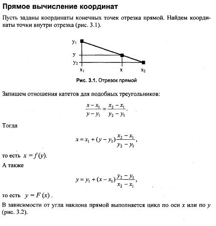

Алгоритм вывода прямой линии
Рассмотрим растровые алгоритмы для отрезков прямой линии. Предположим, что заданы координаты (х1,у1 - х2,у2) концов отрезка прямой. Для вывода линии необходимо закрасить в определенный цвет все пикселы вдоль линии. Для того чтобы закрасить каждый пиксел, необходимо знать его координаты.
Наиболее просто нарисовать отрезок горизонтальной линии:
for (x=xl; х<=х2; х++) Пиксел(х, yl) ;
Вычисление текущих координат пиксела здесь выполняется как приращение по х (необходимо, чтобы х1<=х2) а вывод пиксела обеспечивается функцией Пиксел(). Поскольку в языке С, C++ для названия функции нельзя использовать кириллицу, то будем дальше использовать ее как комментарий.
Аналогично рисуется отрезок вертикали:
for (y=yl; у<=у2; у++) //Пиксел(xl, у);
Как видим, в цикле выполняются простейшие операции над целыми числами— приращение на единицу и проверка на "< =". Поэтому операция рисования отрезка выполняется быстро и просто. Ее используют как базовую операцию для других операций, например, в алгоритмах заполнения плоскости полигонов.
